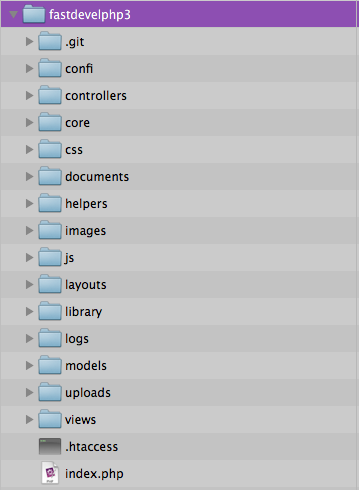
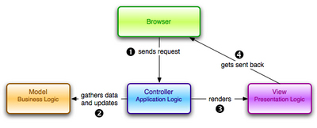

Acerca de
FastDevelPHP es un sencillo framework de código libre para agilizar y estructurar el desarrollo de aplicaciones web orientado a programadores de PHP que necesitan una guía sencilla, en español y bien documentada.
Por su manera de estructurado de contenidos, la optimización de código y la auto generación de modelos, Fastdevelphp es un framework ágil para proyectos pequeños, medianos y grandes.
Manejo de yuqueríes y
selectores para los modelos, basado en las ideas de la librería
jQuery con caché de objetos para hacer múltiples acciones en una
línea de instrucción y la funcionalidad scaffold basada en las
ideas de Ruby on Rails para reducir los tiempos de desarrollo de una
manera significativa.
FastDevelPHP tiene las siguientes
ventajas:
Programación Orientada a Objetos MVC.
Rendimiento Excepcional.
Configuración sencilla tanto en Localhost como también en los servidores de alojamiento.
Cero uso de la consola de línea de Comando para su configuración.
Estructuración u organización de los archivos según su tipo, finalidad y/o módulos.
Optimización en líneas de código (líneas de instrucción).
Biblioteca de funciones de uso frecuente.
Seguridad de la estructura y/o atributos de la Base de Datos usando alias.
Generar automáticamente los objetos modelo (ORM) de acuerdo a la estructura de la Base de Datos.
Nombres de URL significativos.
Súper sencillo y liviano
Sintaxis simple
Referencia a Objetos
Eventos de modelos de las acciones mas comunes: onSave(), onUpdate(), onDelete(), etc.
Manual de instalación
Descargar
el framework “FastDevelPHP” del siguiente enlace
y descomprimir el archivo en algún lugar de sus servidor.
Ej:
descomprimir los archivos en FastDevelPHP, donde FastDevelPHP es un
folder dentro de nuestro host (www/ , htdocs/, … depende del
servidor que se haya instalado).
Configuración
del framework
Modificar el archivo “.htaccess” que esta
dentro de la carpeta FastDevelPHP de acuerdo a su
proyecto.
RewriteBase /<dirección
de su proyecto>/
Donde “<dirección
de su proyecto>” es la dirección al directorio del
proyecto, si el proyecto esta en la raíz, basta con dejarlo /
Ej:
FastDevelPHP
Modificar las variables de configuración ubicadas en confi/FD_Config.php de acuerdo a su proyecto:
url
del proyecto:
define("ROOT_PATH","$protocol://".$_SERVER["HTTP_HOST"]."/<dirección
de su proyecto>/");
Ej: FastDevelPHP
sección base de datos: datos de conexión a la base de datos
sección configuración: nombre del sitio y controlador por defecto
rutas: ver en sección de URL’s
shortcodes: ver en sección de shortcode´s
Habilitar
el ”Modulo rewrite” del archivo “httpd.conf” que
normalmente se sitúa en “c:\AppServ\Apache2.2\conf\httpd.conf”
o similar a “….\Apache2.2\conf\httpd.conf”
#LoadModule
rewrite_module modules/mod_rewrite.so
Cambiar a
LoadModule
rewrite_module modules/mod_rewrite.so
luego reiniciar apache
Iniciar
FastDevelPHP
Acceder por cualquier navegador con la siguiente
url: <dominio>/<nombre de mi proyecto>/
A
continuación mostrará la pagina de inicio por defecto de
FastDevelPHP.
Ej: http://localhost/ FastDevelPHP/
Estructura

confi:
Archivos
de Configuración de FastDevelPHP (modificable de acuerdo al
proyecto).
controllers:
Carpeta de almacenamiento de Controladores del sistema.
core:
Carpeta de archivos core del framework
css:
Carpeta de almacenamiento de Hojas de estilo.
Documents:
Carpeta de almacenamiento de documentos del proyecto.
helpers:
carpeta de almacenamiento de helpers
images:
Carpeta
de almacenamiento de imágenes del sistema.
js:
Carpeta
de almacenamiento de archivos javaScript del sistema.
layouts:
Carpeta de almacenamiento de Layouts del sistema.
library: Carpeta
de almacenamiento de librerías
logs:
Carpeta
de almacenamiento de logs del sistema
models:
Carpeta de almacenamiento de los objetos modelo del sistema
uploads:
Carpeta de almacenamiento de archivos subidos por el proyecto
views:
Carpeta
de almacenamiento de las vistas del sistema.
.htaccess:
Archivo
de configuración de redireccionamiento de rutas del sistema
(modificable de acuerdo al proyecto).
index.php:
Archivo
de acceso a index del sistema.
URL’s
La estructura de las URL’s pueden ser las siguientes:
ROOT_PATH
Ej:
http://localhost/proyecto/
En este caso la llamada es al
controlador por defecto, definido en “FD_config.php”.
ROOT_PATH
+ NombreControlador/
Ej: http://localhost/proyecto /Usuario
/
En este caso la llamada es al controlador Usuario a su función
por defecto “index()”.
ROOT_PATH
+ NombreControlador/ NombreFuncionControlador/
Ej:
http://localhost/proyecto /Usuario /Lista/
En este caso la
llamada es al controlador “Usuario” a su función “Lista()”.
ROOT_PATH
+ NombreControlador/ NombreFuncionControlador/Parametro_1/
Parametro_2…../ Parametro_n
Ej: http://localhost/proyecto
/Usuario /Editar/1/2
En este caso la llamada es al controlador
“Usuario” a su función “Editar($a, $x)”.
Parámetros
enviados por Método GET:
ROOT_PATH + NombreControlador/
?language=php&version=5
Donde language y versión son
variables enviadas de tipo GET.
Ejemplo de manipulación de
variables GET:
echo $_GET[“language”].” ”.$_GET[“versión”];
Resp: php 5
Módulos:
ROOT_PATH + NombreCarpetaModulo/NombreControlador/
NombreFuncionControlador/Parametro_1/ Parametro_2…../
Parametro_n
Ej: http://localhost/proyecto /Administrador /Usuario
/Editar/1/2
En este caso la llamada es al controlador “Usuario”
que esta dentro la carpeta /Controllers/Administrador/ a su función
“Editar($a, $x)”.
Routes
Estas
URL’s sobre escriben las URL’s definidas por defecto por los
controladores y funciones por URL’s significativas para mejorar el
SEO y ofrecer mas comodidad para los visitantes.
Ej:
Caso
estático:
$FD_Routes = array("contacto.html" =>
"home/contacto", … );
Caso dinámico por expresiones
regulares:
$FD_Routes = array("productos-nuevos/[0-9]"
=> "producto/show/$0");
Esta configuración se
encuentra en el archivo de configuración FD_Config.php
MVC
A alto nivel, el patrón MVC permite separar los distintos aspectos de una aplicación (Inputs lógicos, lógica de negocio, lógica de UI), otorgando un bajo acoplamiento entre estos elementos. Esto permite que al momento de construir una aplicación, nos focalicemos solo en un aspecto, como por ejemplo en una vista sin tener dependencia de la lógica de negocio.
Además el desacoplamiento de sus componentes, permite que los distintos aspectos se puedan desarrollar en paralelo. Así, un desarrollador se puede abocar solo a las vistas, un segundo desarrollador a la lógica del controlador y otros focalizarse solamente en la lógica de negocio del modelo.
Ventajas
permite tener completo control sobre el comportamiento de una aplicación
soporta muy bien las aplicaciones que requieran de un gran equipo de desarrollo, donde se necesita un gran nivel de profundidad y popularización, otorgando un completo control sobre el modulo asignado.
Controlador
El controlador maneja la interacción del usuario, trabaja con el Modelo, y por ultimo selecciona la vista a rende rizar en la interfaz de usuario. En una aplicación MVC, la vista solo despliega información, el controlar maneja y responde los inputs de interacción del usuario.
Un ciclo a alto nivel se desarrolla de la siguiente forma: El usuario envía peticiones (nunca a la vista) las cuales son recibidas por el lado del servidor mediante el controlador, este sabe como y a que modelo comunicarse para responder ante el requerimiento. La respuesta del controlador es finalmente dirigida a una vista, o una vista parcial.
Estos controladores deben estar ubicados dentro el directorio controllers/ con un postfijo de _Controller.php, es decir el nombre del controlador deber concatenado con guion bajo, Ej: Home_Controller.php Adicionalmente los controladores tienen soporte de funcionar en subdirectorios denominados módulos, de modo por el cual estos módulos son folders ubicados dentro del folder controllers/, para ver la forma de acceso a ellos, refiérase a la sección de URL‘s.
Estructura:
<?php
class Home_Controller extends FD_Management
{
function __construct()
{
parent::__construct();
$this->useLayout("public");
}
function index()
{
$params[“visitor”]
= “Owen”;
$this->loadView("home", $params);
}
}
?>
Variables disponibles
$this->DB: Objeto Active record
$this->SQL: Objeto que realiza conexión a la base de datos
$this->Session: Objeto manejador de sesiones
$this->Utility: Objeto manejador de funciones de uso frecuente
ROOT_PATH: Url web del proyecto
CSS_PATH: Path al folder css/
JS_PATH: Path al folder js/
IMAGE_PATH: Path al folder images/
Funciones disponibles
$this->useLayout($layout,
$params=array())
establece un layout
$layout: nombre del
layout
$params: parámetros para el layout
$this->clearLayout()
Limpia
el layout definido
$this->loadView($view,
$params=array(), $layout="", $paramsLayout=array())
Carga
la vista con layout
param: $view = nombre de la vista en
views/$view.php
param: $params = parámetros para la vista
param:
$layout = nombre del layout ubicado en layouts/$layout.php, si es
vacío usa definición anterior
param: $paramsLayout = parámetros
para layout
return: null
$this->loadCollectionView($view,
$alias, $collection, $params = array())
Carga una vista sin
layout por serie para cada ítem de $collection
param: $view =
nombre de la vista ubicada en views/$view.php
param: $collection
= un array de objetos
param: $alias = nombre de la variable
$collection[$i]
param: $params = parámetros para la
vista
return: null
$this->loadPartialView($view,
$params=array())
Carga una vista sin layout, ideal para
peticiones Ajax
$view: nombre de la vista ubicada en
views/$view.php
$params = parámetros para la vista
return
null
$this->do_shortCode($content
= "")
ejecuta todos los shortcode tags como: [saludo
msg='hola mundo']
$content: contenido html o texto
Nota: todos
los shortcodes deben ser configurados en FD_config.php
return
string
$this->redirect($controller,
$function = "index", $paramsGet = "")
redirecciona
la pagina a: ROOT_PATH.$controller/$function?$paramsGet
$controller:
nombre del controlador
$function: nombre de la función en
$controller
$paramsGet: parámetros $_GET :
nombre=owen&app=Peredo
return: null
$this->loadLibrary($Classname,
$params = array())
Carga una libreria $Classname con parametors
$params
$Classname: nombre de la clase y del archivo ubicado en
library/$Classname.php
return: Library Object
$this->loadHelper($source)
Carga
un helper
$source: nombre del archivo ubicado en
helpers/$source
return: null
$this->loadConfig($source)
Carga
una configuración
$source: nombre del archivo ubicado en
confi/$source
return: null
Modelo
corresponde a la parte de la aplicación que implementa la lógica del dominio de datos de la aplicación, además de incorporar la persistencia de datos.
Los objetos del modelo recuperan y almacenan los estados del modelo en la base de datos. Aquí se hace el levantamiento de los objetos que el sistema deba utilizar y es el de proveedor de los recursos al controlador.
Los modelos son autogenerados
en caso de no existir a partir de las tablas de la base de datos,
donde cada modelo representa a una tabla de la base de datos con sus
atributos ubicados en el folder models/, donde el nombre del modelo
es el mismo nombre del archivo.
Estos modelos pueden ser modificados (agregar/modificar/eliminar atributos, funciones, etc.) excepto las variables del constructor, ya que esos atributos deben ser los mismos de la base de datos.
Nota: si se agrega, modifica o se elimina un atributo de la tabla de la base de datos, este debe ser actualizado en el modelo manualmente, tanto en el constructor como en las variables del modelo:
var
$new_var;
__construct($new_var = null, …)
$this->new_var =
$new_var;
Estructura:
<?php
class User extends FD_ManageModel
{
var $alias_of_atributes = array();
var $fd_rules = array();
var $fd_primary_key = 'id_user';
var $id_user;
var $name_user;
function __construct($id_user = '', $name_user = '')
{
$this->id_user = $id_user;
$this->name_user = $name_user;
}
}
?>
Donde User es el nombre del
modelo y $id_user, $name_user son atributos de la tabla user en la
base de datos.
Variables disponibles
$alias_of_atributes:
Almacena los alias de los atributos de la base de datos, de esta
manera poder usar nombres de atributos mas sencillos y fáciles de
recordar, también es muy usado para evitar mostrar los nombres
reales en los formularios, ya que existen hackers que hacen uso de
esa información.
Ej:
var $alias_of_atributes =
array(“nombre_persona”=>”nombre”);
luego poder
hacer llamada al atributo por su alias o por su nombre real, de la
misma manera poder usarlo en los formularios.
Ej:
echo
$Obj-> nombre_persona;
ó
echo $Obj-> nombre;
$fd_rules:
Arreglo de reglas de validación, tales como: req, num,
maxlen=???, minlen=???, alnum, email, … especificados en
http://www.fastdevelphp.sysdecom.com/validate.
La estructura es:
array(“nombre atributo”, “tipo de validación”, “mensaje
de error”)
Ej:
array(
array(“login”,
“req”, “Campo requerido”),
array(“login”,
“maxlen=25″, “Max caracteres es 25″),
.... );
Nota:
Estas reglas son ejecutas con la instrucción
$nombre_modelo->isValid()
$fd_primary_key: Tiene como valor el nombre del identificador en la tabla de la base de datos.
Funciones disponibles
save()
$generateKeyObject:
deprecado
Guarda este objeto en la base de datos
retorna: el
objeto guardado
update()
Actualiza
este objeto en la base de datos
retorna: el objeto guardado
getChildrens($name_attr_parent,
$where = "")
$name_attr_parent: nombre del atributo en
el objeto parent
$where: condition sql para los
childrens
retorna: los objetos children de este objeto, muy usado
en recursividad
create_object($name_object,$array_valores=array(),
$postfix = "")
crea un objeto $name_object con valores
$array_valores y $name_object->$primary_key = valor del objeto
actual
$name_object: nombre de la tabla
$array_valores:
valores para el objeto
$postfix: postfijo para el nombre de los
atributos en $array_valores, Ej: _user
retorna: el objeto creado
merge_values($array_values=array())
actualiza
el objeto con valores $array_values
$array_values: nuevos valores
para el objeto
retorna: el objeto actualizado
references($table_name,
$where = null, $order_by = null, $limit = null, $attr_foreingkey =
null)
$table_name: nombre de la tabla
$where: condition
SQL
$order_by: name_attr ASC / name_attr DESC
$limit: limit
sql. Ej: 0,10 => los primeros 10
$attr_foreingkey:
nombre del atributo (llave foranea) en la tabla $table_name para el
objeto actual,
por defecto es el identificador del objeto
actual
$this: objeto actual
retorna: los objetos $table_name,
donde: $table_name->$attr_foreingkey = $this->primary_key y
que cumpla $where
ordenado por $order_by de cantidad $limit
foreing_key($table_name,
$where = null, $attr_primarykey = null)
$table_name: nombre de la
tabla
$where: condition SQL
$order_by: name_attr ASC /
name_attr DESC
$limit: limit sql. Ej: 0,10 => los
primeros 10
$attr_primarykey: nombre del atributo (llave foranea)
de la tabla $table_name para el objeto actual,
por defecto es el
identificador del objeto $table_name
$this: objeto
actual
retorna: el objeto $table_name, donde:
$table_name->primary_key = $this->$attr_primarykey y que
cumpla $where
delete()
elimina
el objeto actual de la DB
retorna: el objeto eliminado - $this
getPrimaryKey()
retorna
el nombre del atributo identificador del objeto
setAttr($attr,
$val = "")
actualiza el valor del atributo $attr al
nuevo valor $val
$attr: nombre del atributo en el modelo
$val:
nuevo valor para este atributo
retorna el mismo objeto
isValid()
verifica
si el modelo cumple las reglas $fd_rules
retorna true: si el
objeto cumple con todas las reglas, FALSE: si hay algún error en
las reglas $fd_rules
getValidateErrors()
retorna
los mensajes de error de la validación generada por isValid()
Funciones de eventos
Estas funciones se activan
cuando se están haciendo acciones sobre los modelos y son ejecutadas
siempre y cuando se hayan definido en el modelo.
onSave(): función que se ejecuta antes de guardar el modelo en la base de datos
afterSave(): función que se ejecuta despues de guardar el modelo en la base de datos
onUpdate(): función que se ejecuta antes de actualizar el modelo en la base de datos
afterUpdate(): función que se ejecuta despues de actualizar el modelo en la base de datos
onDelete(): función que se ejecuta antes de eliminar el modelo en la base de datos
afterDelete(): función que se ejecuta despues de eliminar el modelo en la base de datos
Singleton:
Para poder instanciar el Objeto
Management, es necesario llamar a la función Singleton
getInstance().
Ej:
$FD = getInstance();
$Object
= $FD->DB->get_object_by_id(“tablename”, $this->id);
ó
$FD->Utility->…
Vista
Es el componente que despliega
la interfaz de usuario de la aplicación. Normalmente (no siempre),
esta UI es creada a partir de los datos del modelo (Un ejemplo puede
ser una vista de edición de una tabla de productos que muestra
cuadros de texto, listas desplegables y casillas de verificación
basado en el estado actual de los objetos Producto). Esta puede ser
una web, XML, etc.
Comúnmente las vistas son contenidos html,
en las cuales se muestran las variables enviadas desde el controlador
sin importar el tipo ni formato de estas.
Estructura:
<div class="home">
Hello “<?php echo $visitor_name ?>”
</div>
Variables disponibles
Tiene acceso a todas las variables enviadas por el controlador
$this->Utility: refiérase a la sección de Librería de funciones
$this->Session: refiérase a la sección de Sesiones
$this->DB: refiérase a la sección de Active Record
$this->SQL: refiérase a la sección de Active Record
ROOT_PATH: Url web del proyecto
CSS_PATH: Path al folder css/
JS_PATH: Path al folder js/
IMAGE_PATH: Path al folder images/
Funciones disponibles
Para ver el detalle de las funciones, refiérase a la sección de controladores.
$this->loadPartialView($view, $params=array())
$this->loadCollectionView($view, $alias, $collection, $params = array())
$this->do_shortCode($content
= "")
Layout
Un
diseño contiene el código de presentación que envuelve una vista.
Cualquier cosa que quieras ver en todas tus vistas debería estar
situada en un layout.
Los ficheros de diseño deberían situarse
en el folder layouts/. Una vez que ha sido creado un nuevo diseño,
el código de la vista renderizado por el controlador se coloca
dentro del diseño por defecto cuando la página es renderizada.
Cuando creas un diseño, necesitas decirle a FastDevelPHP dónde
colocar el código para tus vistas. Para hacer eso, estate seguro
que tu diseño incluye un lugar para $contentView (y opcionalmente,
$title_for_layout).
Estructura:
<!DOCTYPE html PUBLIC "-//W3C//DTD XHTML 1.0 Transitional//EN" "http://www.w3.org/TR/xhtml1/DTD/xhtml1-transitional.dtd">
<html xmlns="http://www.w3.org/1999/xhtml">
<head>
<title><?php echo $title_layout?></title>
<link rel="shortcut icon" href="favicon.ico" type="image/x-icon"/>
<!-- Incluir ficheros css, js y scripts externos aquí -->
<!--
<script type="text/javascript" src="<?php echo JS_PATH ?>sample.js"></script>
<link href="<?php CSS_PATH ?>sample.css" rel="stylesheet" type="text/css" />
-->
</head>
<body>
<!-- Si quieres algún tipo de menú para mostrar en todas tus vistas, inclúyelo aquí con la función $this->loadPartialView($view, $params=array()) -->
<div id="cabecera">
<div id="menu">...</div>
</div>
<!-- Aquí es donde quiero que se vean mis vistas -->
<?php echo $contentView ?>
<!-- Añadir un pie de página a cada página mostrada -->
<div id="pie">...</div>
</body>
</html>
Variables disponibles
Tiene acceso a todas las variables enviadas por el controlador para el layout
$this->Utility: refiérase a la sección de Librería de funciones
$this->Session: refiérase a la sección de Sesiones
$this->DB: refiérase a la sección de Active Record
$this->SQL: refiérase a la sección de Active Record
ROOT_PATH: Url web del proyecto
CSS_PATH: Path al folder css/
JS_PATH: Path al folder js/
IMAGE_PATH: Path al folder images/
Funciones disponibles
Para ver el detalle de las funciones, refiérase a la sección de controladores.
$this->loadPartialView($view, $params=array())
$this->loadCollectionView($view, $alias, $collection, $params = array())
$this->do_shortCode($content = "")
Sesiones
Liberia
que maneja las sesiones del proyecto.
Variables disponibles
$this->Utility: refiérase a la sección de Librería de funciones
$this->DB: refiérase a la sección de Active Record
$this->SQL: refiérase a la sección de Active Record
ROOT_PATH: Url web del proyecto
Funciones disponibles
startSession($User)
Inicia
la Session con los datos del usuario $Usuario
$Usuario: objeto
DB
retorna: null
NOTA: adaptar consulta de acuerdo a la base
de datos
login($uName,
$uPass)
Verifica credenciales enviadas
$uName:
username
$uPass: password
Retorna: true si se a logeado bien,
false si a fallado
NOTA: adaptar consulta de acuerdo a la base de
datos
getUser()
obtiene
el usuario de la Session
$Usuario: objeto DB
retorna:
null
NOTA: adaptar consulta de acuerdo a la base de datos
check($routeIndex="",
$publicNameFunctions = array())
verifica si estas logeado
return
true/false
si $routeIndex existe y no esta logeado, redirecciona
a $routeIndex
$publicNameFunctions = Arreglo de nombres de
funciones que no requieren login (funciones publicas)
logout($routeIndex
= "")
Destruye la Session
redirecciona a
ROOT_PATH/$routeIndex
unset_data($key)
elimina
un valor de la Session
get_data($key)
retorna:
el valor de $key en la Session
add_data($datas
= array())
agrega valores en la Session
Ej:
$datas("name"=>"owen", "app"=>"peredo")
addFlashMessage($key,
$msg, $type = 0)
Agrega un nuevo flashmessage
$key: nombre del
identificador
$msg: valor o mensaje
$type: number = 0 =>
successful, 1 => fail, 2 => warning
getFlashMessage($key,
$attr='message')
obtiene el flashmessage con identificador
$key
$key: identificador del mensaje
$attr: valor a retornar,
puede ser:
message = retorna el texto del mensaje
key =
retorna el tipo de mensaje
null = el mensaje completo
retorna:
el tipo definido en $attr
getFlashMessages()
retorna
todos los flashmessages
printFlashMessages()
imprime
todos los flashmessages
Librería de
funciones
Librería que contiene muchas de las
funciones mas usadas en el desarrollo de aplicaciones web, estas
funciones se encuentran en el archivo core/ FD_Utility.php donde
estas funciones pueden ser adaptadas, agregadas sin afectar el
normal funcionamiento del framework.
Funciones mas usadas
createOptions($attrsElement
= array(), $array_values = array(), $selectedKeyValue = "",
$text_default = "Select an option", $default =
true)
$attrsElement: atributos para el dropdown: name=>"",
class=>"", ..
$array_values: array de
valores
$selectedKeyValue: key seleccionado
$text_default:
texto por default
$default: si es true, muestra el texto por
default
Retorna un dropdown con los parámetros enviados
createOptionsObject($attrsElement
= array(), $Objects, $attrObjectText, $selectedKeyValue = "",
$text_default = "Selecciona una opción",
$default = true)
$attrsElement: atributos para el dropdown:
name=>"", class=>"", ..
$Objects: array
de objetos DB
$attrObjectText: nombre del atributo o nombre de
función() a mostrar
$selectedKeyValue: key
seleccionado
$text_default: texto por default
$default: si es
true, muestra el texto por default
Retorna un dropdown con los
parámetros enviados
createGroupChecksObject($attrsElement
= array(), $Objects, $attrObjectText, $array_check_values =
array())
$attrsElement: atributos para los checkbox: name=>"",
class=>"", ..
$Objects: array de objetos
DB
$attrObjectText: nombre del atributo o nombre de función() a
mostrar
$array_check_values: array de keys marcados
(checked)
Retorna un grupo de checkbox con los parámetros
enviados
createGroupChecks($attrsElement
= array(), $array_values = array(), $array_check_values =
array())
$attrsElement: atributos para los checkbox: name=>"",
class=>"", ..
$array_values: array de
valores
$array_check_values: array de items seleccionados
Retorna
grupo de checkbox con los parámetros enviados
createGroupRadios($attrsElement
= array(), $array_values = array(), $radio_check_value =
"")
$attrsElement: atributos para los radio buttons:
name=>"", class=>"", ..
$array_values:
array de valores
$radio_check_value: key seleccionado
Retorna
grupo de radio buttons con los parámetros enviados
createGroupRadiosObject($attrsElement
= array(), $Objects, $attrObjectText, $radio_check_value =
"")
$attrsElement: atributos para los checkbox:
name=>"", class=>"", ..
$Objects: array
de objetos DB
$attrObjectText: nombre del atributo o nombre de
función() a mostrar
$radio_check_value: key seleccionado
(checked)
Retorna un grupo de radio buttons con los parámetros
enviados
uploadFile($inputname,
$dirSave, $support_types = array('gif', 'jpg', 'jpeg', 'png'),
$maximum = null)
$inputname: campo input file del
formulario
$dirSave: directorio en el que se va a guardar el
archivo
$support_types: array con los formatos permitidos, si es
null soporta todos los formatos
$maximum: numero en bytes como
tamaño máximo a subir, si es vacío soporta el máximo definido en
php.ini
retorna: array(error= true/false, msg=string,
file=filesaved_name), si el archivo no existe retorna FALSE
uploadFileByTmpname($filename,
$tmpname, $dirSave, $support_types = null, $maximum =
null)
$filename: nombre con el que se va a guardar el
archivo
$tmpname: tmpname del archivo a subir, Ejm:
$_FILES["mi_campo"]['tmp_name']
$dirSave: directorio en
el que se va a guardar el archivo
$support_types: array con los
formatos permitidos, si es null soporta todos los formatos
$maximum:
numero en bytes como tamaño máximo a subir, si es vacío soporta
el máximo definido en php.ini
retorna: array(error= true/false,
msg=string, file=filesaved_name), si el archivo no existe retorna
FALSE
create_paginator($total_items,
$per_page = 4, $current_page = 1, $url, $items_show = 10)
Crea un
paginador con los datos enviados
$total_items: number - total
items
$per_page: number - items por pagina
$current_page:
pagina actual
$url: url de cada pagina
$items_show: number -
total paginas a mostrar
sendEmail($to,
$title, $content, $from="")
Envía email en formato
html
$to: para
$title: titulo del email
$content: contenido
del email
$from: email del que envía (opcional)
retorna: true
si a enviado bien, false si hubo error en el envió
breadcrumb($current,
$Ancestors = array(), $prefix_text = "You are in: ")
crea
un bradcrumb links
$current: current text
$Ancestors:
ancestors links, format: array(link=>title)
$prefix_text:
Texto de inicio
minutesToHours($minutes, $print = false)
getDateMinutes($date)
getDateMinutes($date)
getDateRangeHours($date_from, $date_to, $print = false)
getDateRangeHours($date_from, $date_to, $print = false)
cutText($text, $quantity = 45)
objectToArray( $object )
getYoutubeId($link = '')
checkPath($path)
Y otros de menor importancia
que se encuentran en el archivo de la Librería
Scaffold
Esta
librería se encarga de auto generar el CRUD de un modelo indicando
los tipos de inputs y los valores predefinidos con código bien
ordenado, tales como:
Listado de ítems de la sección
Panel de creación
Panel de edición
Funcionalidad de eliminar la sección
Para acceder a esta
librería use la siguiente url:
http://<url del
proyecto>/ui_scaffold
ahí se mostrará las opciones de generar
el scaffold.
Componentes:
controllers/UI_scaffold_Controller.php
layouts/ui_scaffold.php
views/ui_scaffold/
js/scaffold/jquery.js
css/scaffold/style.css
Resultados generados:
un controlador
dos vistas (index.php, form.php)
Shortcode’s
Librería
que ejecuta ciertas funciones cuando encuentra un tag definido en
$FD_Shortcodes.
key = shortcode name.
val = Controller
Name and function name. Example: "saludo" =>
"Home::hola_mundo" This sample execute the function
hola_mundo($atts){ } from Home_Controller.
After defined
this, you can use the shortcode like to:
[key attrName1='val'
attrName2='val2' ...] with $this->do_shortCode()
Example:
$this->do_shortCode("Here is my salute: [saludo msg='hola
mundo'], good bye.");
The holamundo() function, should be
similar to
function hola_mundo($atts)
{
ob_start();
echo $atts["msg"];
return
ob_get_clean();
}
Library &
Helper
Library
La manera de uso es lo
siguiente:
$this->loadLibrary($Classname, $params =
array());
$Classname es el nombre del objeto
$params son los
parámetros por defecto del objeto (parámetros para el constructor
del objeto)
Retorna el Objeto
NOTA: El Liberia deberá estar
ubicado dentro la carpeta “library/”
Helper
La
manera de uso es lo siguiente:
$this->loadHelper($source);
$source
es la url relativa del archivo
Retorna vacío
NOTA: El helper
deberá estar ubicado dentro la carpeta “helpers/”
Singleton:
Para poder instanciar el Objeto
Management, es necesario llamar a la función Singleton
getInstance().
Ej:
$FD =
getInstance();
$FD->Utility->…
Active
record
Esta librería es la característica del
framework en comparación de otros frameworks, debido a que esta
librería es la que maneja los selectores de modelos de una forma
muy intuitiva y la manipulación de las mismas.
Esta librería ofrece las
siguientes funciones:
get_objects_By_Sql($name_object,
$sql)
$name_object: nombre de la tabla
$sql: condition
sql
return: un arreglo de objetos de tipo $name_object
countObjects($name_object,
$where = "")
$name_object: nombre de tabla
$where:
condition sql
Retorna la cantidad de objetos del tipo
$name_object que cumplan la condición $where
get_objects($name_object,
$where="", $order_by = "", $limit =
"")
$name_object: nombre de tabla
$where: condition
sql
$order_by: name_attr ASC / name_attr DESC
$limit: limit
sql. Ej: 0,10 => los primeros 10
Retorna los
objetos de tipo $name_object que cumplan la condición $where
ordenado por $order_by la cantidad $limit
get_last_object($name_object,
$where="", $order_by = "")
$name_object:
nombre de tabla
$where: condition sql
$order_by: name_attr ASC
/ name_attr DESC
Retorna el ultimo objeto de tipo $name_object
que cumplan la condición $where ordenado por $order_by
get_first_object($name_object,
$where = "", $order_by = "")
$name_object:
nombre de tabla
$where: condition sql
$order_by: name_attr ASC
/ name_attr DESC
Retorna el primer objeto de tipo $name_object
que cumplan la condición $where ordenado por $order_by
get_object_by_id($name_object,
$id="")
$name_object: nombre de la tabla
$id: id del
objeto
retorna: un objeto de tipo $name_object que tenga valor de
su identificador = $id
get_object_by_attribute($name_object,
$name_attr, $val_attr = "")
$name_object: nombre de la
tabla
$name_attr: nombre del atributo
$val_attr: valor del
atributo
retorna: el primer objeto de tipo $name_object con
atributo $name_attr = $val_attr
get_objects_by_attribute($name_object,
$name_attr, $val_attr = "")
$name_object: nombre de la
tabla
$name_attr: nombre del atributo
$val_attr: valor del
atributo
retorna: los objetos de tipo $name_object con atributo
$name_attr = $val_attr
get_object($name_object,
$where="", $order_by = "")
$name_object:
nombre de la tabla
$where: condición sql
$order_by: name_attr
ASC / name_attr DESC
$limit: limit sql. Ej: 0,10 =>
los primeros 10
retorna: el primer objeto de tipo $name_object
que cumple condición $where ordenado por $order_by, si el objeto no
existe retorna false
create_object($name_object,$array_valores=array(),
$postfix = "")
$name_object: nombre de la
tabla
$array_valores: valores para el objeto
$postfix:
postfijo para el nombre de los atributos en $array_valores, Ej:
_user
retorna: el objeto $name_object con los valores
$array_valores
SQL
Librería
de conexión a la base de datos.
Funciones disponibles
execQuery($query,
$show_query = false, $skypeLog = false)
Ejecuta una consulta
SQL
$query: consulta sql
$show_query: opción para imprimir el
sql
$skypeLog: deprecado
getArrayResultsQuery()
retorna:
un arreglo con keys numerales de la consulta realizada por
execQuery()
getResultsQuery()
retorna:
la respuesta a la consulta realizada por execQuery()
getDatabaseTables()
retorna:
un array() con las tablas de la base de datos actual
getFieldsTable($table
= null)
$table: nombre de la tabla
retorna: un array() con las
columnas de la tabla $table
Facebook
Librería
de conexión a Facebook mediante Api graph.
La forma de uso de la librería
es:
$Facebook = $this->loadLibrary("FD_Facebook");
Nota:
Los datos de la aplicación deben estar configurados en
FD_ConfigFB.php
Funciones disponibles
getLoginUrl($perms = array("publish_stream", "email"), $redirect_uri = null)
getLogoutUrl($redirect_uri = null)
saveVisitor($id_user)
setToken($access_token)
checkkPerms($perms = array(), $user_id = "me")
isLoged()
getUser($user_id = "me")
checkIfUserIsFan($object_id)
getUserPages($user_id = "me")
getUserPages($user_id = "me")
getMyFanPage($page_id)
getFanPage($page_id)
getFanPageAccount($pageid)
isAdmin($id_fanpage)
sendFeed($datas, $to = "me")
query($query)
installAppToPage($page_id, $app_id = null)
isAlreadyAppInstalled($page_id, $app_id = null)
getPageTabs($page_id)
deleteTabFanPage($page_id, $tab_id)
getTabFanPage($page_id, $app_id = null)
updateTabFanPage($page_id, $tab_id, $datas = array())
getPhotos($idAlbum, $user = "me")
getAlbums($user = "me")
createAlbum($name, $descr = "")
photoInfo($idphoto)
uploadPhoto($datas, $album_id = "")
uploadVideo($datas, $page_id)
addLike($page_id)
removeLike($page_id)
getFriends($user = "me()")
getInsights($until = "", $since = "")
Upload files
Librería para subir archivos
al servidor, su forma de uso:
$Upload = $this->loadLibrary("FD_Upload");
$filename = $_FILES[$inputname]['name'];
$tmpname = $_FILES[$inputname]['tmp_name'];
if($tmpname)
{
$doc_name = time()."_".$filename;
$Upload->SetFileName($doc_name);
$Upload->SetTempName($tmpname);
$Upload->SetUploadDirectory(“../uploads/”); //Upload directory, this should be writable
//Extensions that are allowed if none are set all extensions will be allowed.
$Upload->SetValidExtensions(array(“pdf”, “txt”, “xls”, “xlsx”));
//Maximum file size in bytes, if this is not set, the value in your php.ini file will be the maximum value
$Upload->SetMaximumFileSize(500000);
if(!$Upload->UploadFile())
{
$res["msg"] = $Upload->GetMessage();
$res["error"] = true;
}else
{
$res["file"] = $doc_name;
$res["msg"] = "Document Saved.";
}
}else
{
echo “File is empty”;
}
Los archivos también pueden ser subidos por las funciones uploadFile(),uploadFileByTmpname() de la librería Utility.